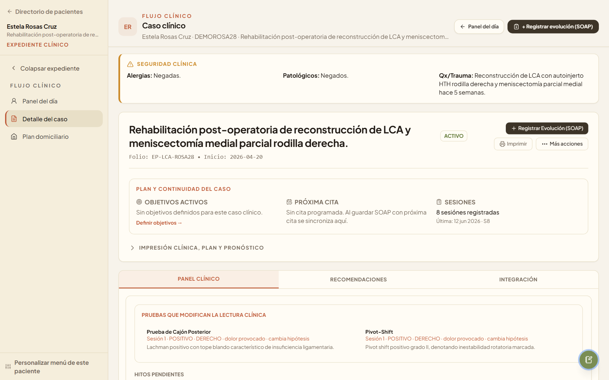

Soy yo

Portafolio · 2026
Ulises Antonio Ponce Pretelin
Lic. en Terapia física · desarrollador de software clínico · PoncePretelin
Profesional en Terapia Física con experiencia en contextos clínicos, comunitarios e internacionales. Construyo PoncePretelin, gestor open source donde la evidencia clínica y el código comparten el mismo expediente.
demo@poncepretelin.app · DemoCloud2026
Hoy
- Clínica Fisioterapeuta · clínica de terapia de lenguaje · Xalapa
- Desarrollo PoncePretelin · gestor clínico open source (AGPL-3.0)
- Demo poncepretelin-web.onrender.com · demo@poncepretelin.app
01 — Sobre mí
Clínica y código,
mismo expediente
Licenciado en Terapia Física (ICES, Xalapa). Experiencia con poblaciones con necesidades especiales en México, Estados Unidos y entornos interdisciplinarios — incluyendo terapia de lenguaje y campamentos de inclusión con Citizens Options Unlimited.
Desarrollo PoncePretelin con la misma lógica clínica: pruebas con sensibilidad y especificidad citadas, escalas EBP, terminología IASP y CIF OMS, y documentación que respeta el juicio profesional.
02 — Trayectoria
Formación y experiencia
-
Fisioterapeuta
Clínica de terapia de lenguaje · entorno interdisciplinario · Xalapa
-
PoncePretelin
Creador y desarrollador del gestor clínico open source para fisioterapia
-
Cabin Leader
Citizens Options Unlimited · campamento de inclusión · EE.UU.
-
Servicio social · ISSSTE
Clínica Hospital ISSSTE Xalapa · liberación ago 2024 · folio 1710/2024
-
Prácticas profesionales
INECOL (salud ocupacional) · Velódromo Internacional de Xalapa
-
Citizens Options Unlimited
Camp Counselor y Behavior Helper · población con discapacidad · EE.UU.
-
Lic. Terapia Física · ICES
Campus Xalapa · estudios finalizados · titulación en curso
03 — Proyecto destacado
PoncePretelin
Flujos clínicos
Tres casos reales
Primera consulta
Crear paciente, episodio activo y nota SOAP inicial con plantillas por especialidad.
Seguimiento EBP
Aplicar NDI u ODI, ver interpretación basada en evidencia y evolución en el expediente.
Terminología prudente
Corrector con ~980 términos IASP · CIF OMS · lenguaje centrado en la persona.
Demo en la nube
Gestor clínico en demo pública. Arranque en frío ~1–2 min en Render free tier.
demo@poncepretelin.app · DemoCloud2026

Interfaz real
Capturas del gestor
Tomadas del entorno Docker local con datos demo — las mismas abstracciones clínicas que verás en la nube.


Diferencial
No es un EMR genérico
Formularios vacíos vs automatizaciones clínicas con fuentes trazables y lenguaje prudente.
Evidencia trazable
Sensibilidad y especificidad de pruebas con referencia a Magee, Cook & Hegedus y guías clínicas — no valores inventados ni generados al azar.
Terminología 2026
~980 términos versionados: IASP 2020, CIF OMS, lenguaje centrado en la persona y comunicación prudente en notas, reportes y resúmenes.
Open source real
AGPL-3.0, auto-hospedaje con Docker y acceso completo sin paywall — auditable y desplegable en tu consultorio, no un SaaS cerrado.
Roadmap honesto
v1 · qué hay hoy
Primera versión pública en desarrollo activo. Lo que ya funciona y lo que sigue en curso.
-
Expediente y flujo clínico
Pacientes, episodios, SOAP, agenda, finanzas y portal paciente.
-
Bibliotecas clínicas
Pruebas diagnósticas, escalas EBP, atlas de evidencia y presets por patología.
-
UX e intake
Pulir flujos de primera consulta, modo consultorio simple y navegación por capítulos.
-
Documentación y despliegue
Guías de instalación más claras, más presets clínicos y capturas actualizadas del demo.
04 — Stack
Tecnologías
TypeScriptFrontend
Next.js 14
FastAPI
PostgreSQLSQLAlchemy · Alembic
Docker
Tailwind
Playwright
Radix UIComponentes accesibles
Arquitectura
Stack en 30 segundos
Next.js 14
Frontend · TypeScript
Frontend · TypeScript
FastAPI
API · Python
API · Python
PostgreSQL
SQLAlchemy · Alembic
SQLAlchemy · Alembic
Docker · auto-hospedaje · demo en Render
Cómo evaluarlo
Tres pasos
- 01 Revisa el repo y la arquitectura en GitHub
- 02 Prueba la demo con las credenciales de arriba
- 03 Despliega con Docker en tu clínica
Lic. en Terapia física · Xalapa, Veracruz
Ulises Ponce Pretelin
Fisioterapeuta y desarrollador de software clínico
05 — Contacto
¿Colaboramos?
Si revisas el proyecto, quieres contribuir o desplegar PoncePretelin en tu consultorio.